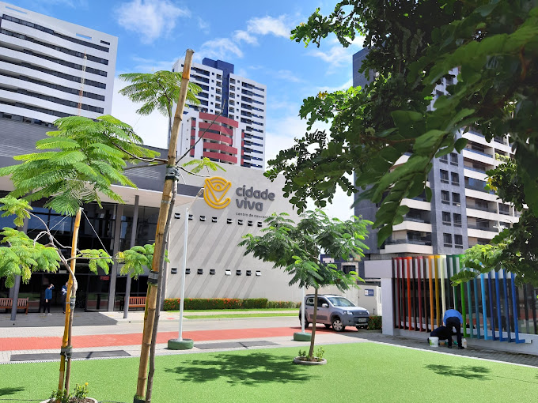
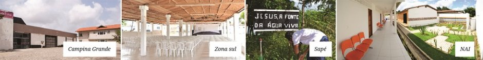

SEGUNDA FASE: 2008 A 2012 (A CONSOLIDAÇÃO)
Enquanto gastávamos os nossos limitados recursos com
a construção dos primeiros equipamentos sociais da
Cidade Viva, continuávamos sem um lugar fixo para as
nossas atividades em João Pessoa. Mas, Deus estava
preparando uma nova surpresa para nós.
Um empresário paraibano, sabendo das ações sociais
que estávamos desenvolvendo, e confiando na
idoneidade do nosso projeto, resolveu construir um
imenso prédio para nos alugar. Um lugar formidável,
perto do mar e da nossa antiga capela de madeira.
Espaço que serviria como sede de todo o projeto até
que fôssemos, pouco a pouco, edificando a nossa
querida Cidade Viva.

Assim, em Dezembro de 2007, inauguramos o Centro de
Convenções Cidade Viva. Prédio com um auditório para
1.500 pessoas, além de diversos outros espaços
destinados ao desenvolvimento das nossas atividades.
Começamos ali um tempo de consolidação das nossas
ações na cidade.
Para melhor desenvolvermos a nossa missão,
instituímos, em 2008, a Fundação Cidade Viva, braço
social do Projeto Cidade Viva, que tem atuado em
presídios, hospitais, abrigos de menores, escolas
públicas, ruas, favelas e tantos outros lugares onde
a dignidade humana precise ser afirmada ou
restaurada. Nesse período, fechamos várias parcerias
institucionais e vimos surgir dezenas de outras
ações ministeriais.
A Fundação Cidade Viva é hoje reconhecida como
instituição de utilidade pública municipal, estadual
e federal, e atua em sete eixos:
1) Apoio à Família
2) Geração de Emprego e Renda
3) Ética, Direito e Cidadania
4) Educação, Esporte e Cultura
5) Saúde
6) Meio Ambiente
7) Promoção dos Valores Cristãos
Em 2010, iniciamos a Escola Internacional Cidade
Viva, braço da Fundação Cidade Viva voltado à
promoção de uma educação de alto nível e cuja missão
é educar líderes que transformarão o mundo. Firmada
sobre o tripé do Bilinguismo, do Tempo Integral e da
Ética Cristã, a Escola Internacional Cidade Viva já
se tornou referência nacional e possuiu parcerias
com a University of Missouri, para prover,
opcionalmente, o ensino médio americano; e com a
Universidade de Cambridge, funcionando como entidade
certificadora da língua inglesa.

Além disso, a escola possui um projeto nutricional
premiado, que tem servido de modelo para várias
outras instituições. Sem falar que cerca de trinta
por cento do faturamento da escola tem sido
convertido em bolsas parciais e integrais.
Entre 2008 e 2012, o Projeto Cidade Viva
fortaleceu-se e ganhou notoriedade. Além do Campus
Aeroclube, onde temos o Centro de Convenções e a
Escola Internacional, fundamos o Campus Campina
Grande, o Campus Zona Sul, O Núcleo de Atendimento
Integral no Município do Conde e o nosso primeiro
Campus rural, na cidade de Sapé.

Mas, nem tudo ia bem! O que seria?